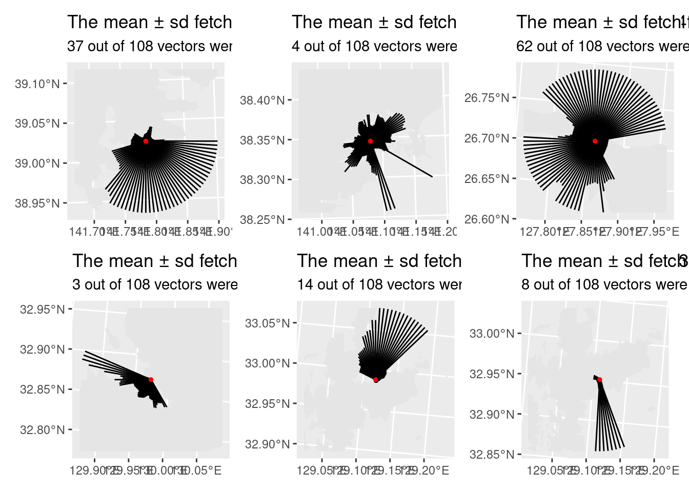

Warning: The `x` argument of `as_tibble.matrix()` must have unique column names if `.name_repair` is omitted as of tibble 2.0.0.
Using compatibility `.name_repair`.
gps_info = gps_info |>mutate(label2 =str_to_sentence(label)) |>mutate(label2 =str_glue("{label2} {ifelse(str_detect(label2, 'Bise'), 'Point', 'Bay')}"))# Prepare the Coordinate Reference System to be EPSG:4326 (Which is WGS 84)# See st_crs(4326) for detailsgps_info = gps_info |>select(long, lat, name) |>st_as_sf(coords =c("long", "lat"), crs =4326, agr ="constant")# Load the map shape files ###################################################### The map uses the ITRF94 system (st_crs(map_poly))# gsi_low = read_sf("~/Lab_Data/Japan_map_data/GSI/coastl_jpn.shp")# gsi_low = read_sf("~/Lab_Data/Japan_map_data/GADM_old/JPN_adm1.shp")map_poly =read_sf("~/Lab_Data/Japan_map_data/GSI/polbnda_jpn.shp")map_poly = map_poly |>select(nam, geometry)# Convert the CRS to EPSG:2450 #################################################map_poly =st_transform(map_poly, st_crs(2450))gps_info =st_transform(gps_info, st_crs(2450))################################################################################# Do the analysis one location at a time. ######################################ptsize =1max_dist =10# In kmn_vectors =3*9# The number of vectors in every quadrant.location ="Hirota Bay"polygon_layer =subset(map_poly, str_detect(nam, "Iwate")) |>st_union() site_layer =subset(gps_info, str_detect(name, "hiro"))fetch_limits =calc_circle(site_layer, max_dist = max_dist, n_vectors = n_vectors)fout = fetch_limits$fetch_limits |>mutate(fe =map2(X,Y,function(x,y) cbind(x,y))) |>mutate(geometry =map(fe, calc_intersection, origin = site_layer, map_layer = polygon_layer))fout = fout |>select(geometry) |>unnest(geometry) |>st_as_sf()temp_layer =st_crop(polygon_layer, st_bbox(fetch_limits$fetch_circle))mean_fetch = fout |>pull(length) |>mean() |>as.numeric()sd_fetch = fout |>pull(length) |>sd() |>as.numeric()max_fetch = fout |>pull(length) |>as.numeric()man_n =sum(near(max_fetch, max_dist *1000))tot_n =length(max_fetch)p1 =ggplot() +geom_sf(data = temp_layer, color =NA) +geom_sf(data = fout) +geom_sf(data = site_layer, color ="red", size = ptsize) +labs(title =str_glue("The mean ± sd fetch for {location} is {format(mean_fetch, digits = 4)} ± {format(sd_fetch, digits = 4)} m."),subtitle =str_glue("{man_n} out of {tot_n} vectors were at the upper limit."))location ="Matsushima Bay"polygon_layer =subset(map_poly, str_detect(nam, "Miyag")) |>st_union() site_layer =subset(gps_info, str_detect(name, "matsu"))fetch_limits =calc_circle(site_layer, max_dist = max_dist, n_vectors = n_vectors)fout = fetch_limits$fetch_limits |>as_tibble() |>mutate(fe =map2(X,Y,function(x,y) cbind(x,y))) |>mutate(geometry =map(fe, calc_intersection, origin = site_layer, map_layer = polygon_layer))fout = fout |>select(geometry) |>unnest(geometry) |>st_as_sf()temp_layer =st_crop(polygon_layer, st_bbox(fetch_limits$fetch_circle))mean_fetch = fout |>pull(length) |>mean() |>as.numeric()sd_fetch = fout |>pull(length) |>sd() |>as.numeric()max_fetch = fout |>pull(length) |>as.numeric()man_n =sum(near(max_fetch, max_dist *1000))tot_n =length(max_fetch)p2 =ggplot() +geom_sf(data = temp_layer, color =NA) +geom_sf(data = fout) +geom_sf(data = site_layer, color ="red", size = ptsize) +labs(title =str_glue("The mean ± sd fetch for {location} is {format(mean_fetch, digits = 4)} ± {format(sd_fetch, digits = 4)} m."),subtitle =str_glue("{man_n} out of {tot_n} vectors were at the upper limit."))location ="Bise Point"polygon_layer =subset(map_poly, str_detect(nam, "Okinawa")) |>st_union() site_layer =subset(gps_info, str_detect(name, "bise"))fetch_limits =calc_circle(site_layer, max_dist = max_dist, n_vectors = n_vectors)fout = fetch_limits$fetch_limits |>as_tibble() |>mutate(fe =map2(X,Y,function(x,y) cbind(x,y))) |>mutate(geometry =map(fe, calc_intersection, origin = site_layer, map_layer = polygon_layer))fout = fout |>select(geometry) |>unnest(geometry) |>st_as_sf()temp_layer =st_crop(polygon_layer, st_bbox(fetch_limits$fetch_circle))mean_fetch = fout |>pull(length) |>mean() |>as.numeric()sd_fetch = fout |>pull(length) |>sd() |>as.numeric()max_fetch = fout |>pull(length) |>as.numeric()man_n =sum(near(max_fetch, max_dist *1000))tot_n =length(max_fetch)p3 =ggplot() +geom_sf(data = temp_layer, color =NA) +geom_sf(data = fout) +geom_sf(data = site_layer, color ="red", size = ptsize) +labs(title =str_glue("The mean ± sd fetch for {location} is {format(mean_fetch, digits = 4)} ± {format(sd_fetch, digits = 4)} m."),subtitle =str_glue("{man_n} out of {tot_n} vectors were at the upper limit."))location ="Omura Bay"polygon_layer =subset(map_poly, str_detect(nam, "Nagasaki")) |>st_union() site_layer =subset(gps_info, str_detect(name, "omura"))fetch_limits =calc_circle(site_layer, max_dist = max_dist, n_vectors = n_vectors)fout = fetch_limits$fetch_limits |>as_tibble() |>mutate(fe =map2(X,Y,function(x,y) cbind(x,y))) |>mutate(geometry =map(fe, calc_intersection, origin = site_layer, map_layer = polygon_layer))fout = fout |>select(geometry) |>unnest(geometry) |>st_as_sf()temp_layer =st_crop(polygon_layer, st_bbox(fetch_limits$fetch_circle))mean_fetch = fout |>pull(length) |>mean() |>as.numeric()sd_fetch = fout |>pull(length) |>sd() |>as.numeric()max_fetch = fout |>pull(length) |>as.numeric()man_n =sum(near(max_fetch, max_dist *1000))tot_n =length(max_fetch)p4 =ggplot() +geom_sf(data = temp_layer, color =NA) +geom_sf(data = fout) +geom_sf(data = site_layer, color ="red", size = ptsize) +labs(title =str_glue("The mean ± sd fetch for {location} is {format(mean_fetch, digits = 4)} ± {format(sd_fetch, digits = 4)} m."),subtitle =str_glue("{man_n} out of {tot_n} vectors were at the upper limit."))location ="Arikawa Bay"polygon_layer =subset(map_poly, str_detect(nam, "Nagasaki")) |>st_union() site_layer =subset(gps_info, str_detect(name, "arik"))fetch_limits =calc_circle(site_layer, max_dist = max_dist, n_vectors = n_vectors)fout = fetch_limits$fetch_limits |>as_tibble() |>mutate(fe =map2(X,Y,function(x,y) cbind(x,y))) |>mutate(geometry =map(fe, calc_intersection, origin = site_layer, map_layer = polygon_layer))fout = fout |>select(geometry) |>unnest(geometry) |>st_as_sf()temp_layer =st_crop(polygon_layer, st_bbox(fetch_limits$fetch_circle))mean_fetch = fout |>pull(length) |>mean() |>as.numeric()sd_fetch = fout |>pull(length) |>sd() |>as.numeric()max_fetch = fout |>pull(length) |>as.numeric()man_n =sum(near(max_fetch, max_dist *1000))tot_n =length(max_fetch)p5 =ggplot() +geom_sf(data = temp_layer, color =NA) +geom_sf(data = fout) +geom_sf(data = site_layer, color ="red", size = ptsize) +labs(title =str_glue("The mean ± sd fetch for {location} is {format(mean_fetch, digits = 4)} ± {format(sd_fetch, digits = 4)} m."),subtitle =str_glue("{man_n} out of {tot_n} vectors were at the upper limit."))location ="Tainoura Bay"polygon_layer =subset(map_poly, str_detect(nam, "Nagasaki")) |>st_union() site_layer =subset(gps_info, str_detect(name, "tain"))fetch_limits =calc_circle(site_layer, max_dist = max_dist, n_vectors = n_vectors)fout = fetch_limits$fetch_limits |>as_tibble() |>mutate(fe =map2(X,Y,function(x,y) cbind(x,y))) |>mutate(geometry =map(fe, calc_intersection, origin = site_layer, map_layer = polygon_layer))fout = fout |>select(geometry) |>unnest(geometry) |>st_as_sf()temp_layer =st_crop(polygon_layer, st_bbox(fetch_limits$fetch_circle))mean_fetch = fout |>pull(length) |>mean() |>as.numeric()sd_fetch = fout |>pull(length) |>sd() |>as.numeric()max_fetch = fout |>pull(length) |>as.numeric()man_n =sum(near(max_fetch, max_dist *1000))tot_n =length(max_fetch)p6 =ggplot() +geom_sf(data = temp_layer, color =NA) +geom_sf(data = fout) +geom_sf(data = site_layer, color ="red", size = ptsize) +labs(title =str_glue("The mean ± sd fetch for {location} is {format(mean_fetch, digits = 4)} ± {format(sd_fetch, digits = 4)} m."),subtitle =str_glue("{man_n} out of {tot_n} vectors were at the upper limit."))
(p1 + p2 + p3) / (p4 + p5 + p6)

pdfname ="~/Downloads/Determine_fetch.pdf"pngname =str_replace(pdfname, "pdf", "png")ggsave(pdfname, width =5*80, height =4*80, units ="mm")img =image_read(pdfname, density =300)img |>image_write(pngname, format ="png")